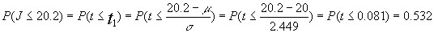

Ejemplo:
Ejemplo 6.12adaptado del pdf Pértegas Díaz, S., & Pita Fernández, S. (2001). La distribución normal. Cad Aten Primaria, pag 148-152.
Dos variables X e Y son independientes y , además se distribuyen normalmente de manera que: X -> N(2;1) mientras que Y® N(4;2) ; suponemos que Z=X+Y . Nos preguntamos por cuál será la distribución y parámetros de la variable Z.
Dado que X e Y son normales e independientes la variable Z también será normal y en aplicación del teorema de adición tendremos que sus parámetros serán:

por lo que Z -> N(6;2.236)